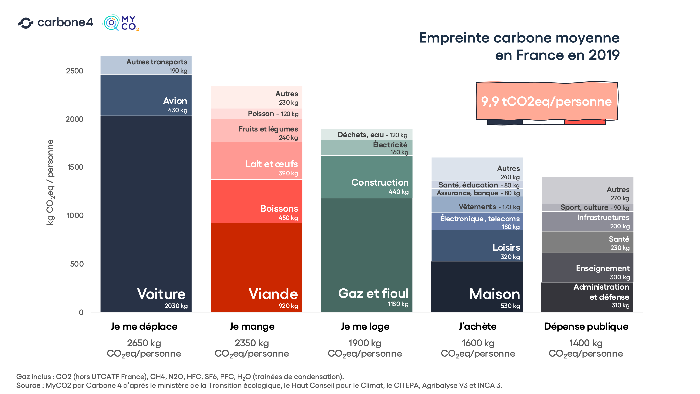

Néocity
Jeu unity de type CityBuiler Responsable
Néocity est un jeu ou vous devez étendre votre ville tout en prennant en compte des enjeux environnemetaux
-
Le gameplay tourne autour de trois type de batiment :
- Les habitation qui permettent d'augmenter la population de la ville
- Les usines qui permettent de produire des ressources
- Les loisirs qui permettent de divertir les habitants -
Pour faire baisser ça pollution le joueur a plusieurs choix
Il peut contruire des habitation proche de l'usine pour que les habitant produisent moins de CO2
Il peut réaffecter les habitant d'une usine a une autre plus proche
Il peut a chaque amelioration de l'hotel de ville choisir des réforme qui ferons évoluer sa ville dans un sens ou dans l'autre -
Partie Technique
Le jeu a été réaliser sur Unity 3D, nous avons utiliser le language C# pour les script, je me suis occuper de la gestion du plateau pour poser les batiment ainsi que de la création de leurs prefab. J'ai passer beaucoup de temps a réaliser la gestion des sauvegarde en JSON. Celle-ci été conplexe car il fallait sauvegarder pour les batiments : leurs position sur la carte, leurs niveau d'amelioration, leurs type et les affection de leur habitant si il y en a . Mais aussi des donnée plus globale comme la population, la pollution et le bonheur de la ville et les réforme selectionné par le joueur. -
Affichage des Rappels dans un Groupe :
- Lorsqu'un utilisateur accède à un groupe, les rappels doivent être affichés dans l'ordre de la date d'échéance, de la plus proche à la plus éloignée.
- Ajoutez une option pour afficher les rappels dépassés, avec un style différent pour indiquer qu'ils sont passés.
Le jeu fonctionne autour de 3 variables : le bonheurs, la pollution et la population, le but du jeu est de trouver un équilibre entre ces trois variables pour faire prospérer votre ville
Si la pollution est trop élevé, des catastrophe naturelles peuvent plus regulièment survenir et plus violente
Si le bonheur est trop bas, la habitant produisent moins de ressource
Si la pollution est trop élevé, des catastrophe naturelles peuvent plus regulièment survenir et plus violente
Si le bonheur est trop bas, la habitant produisent moins de ressource

Pour réaliser ce projet nous étions 4, nous avons longement réflechi aux déferente mécanique de jeu pour arriver a un jeu éducatif et amusant
Pour le réaliser nous nous sommes baser sur cette étude de la pollution en france et avons essayer de reproduire les principaux poles de la pollution dans notre jeu
